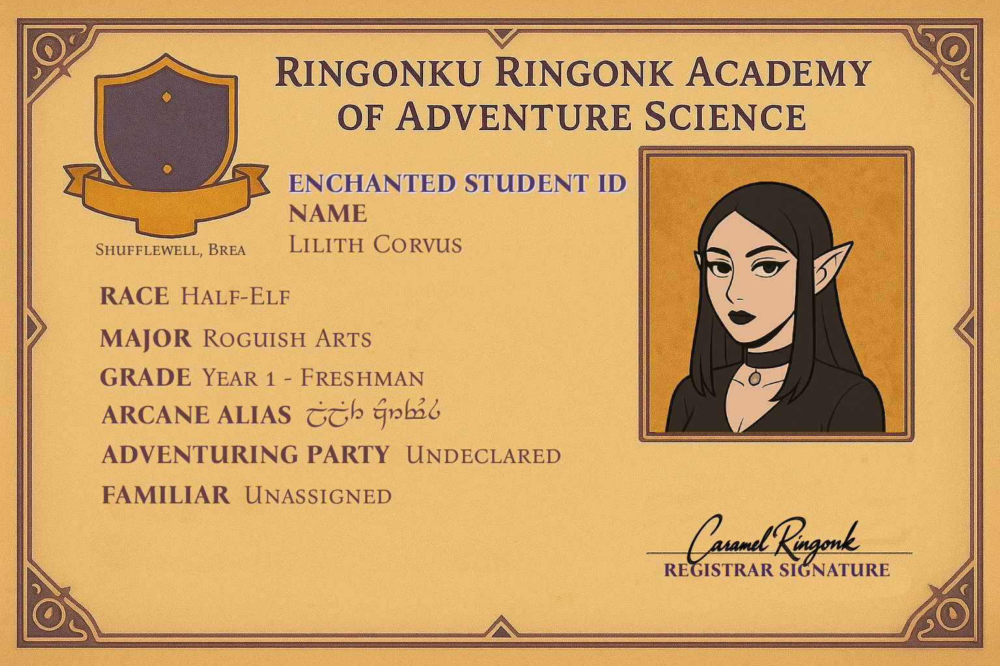

<div class="flip-card-3D-wrapper">
<div id="flip-card" class="orientation-landscape">
    <div class="flip-card-front">
      
    </div>
    <div class="flip-card-back">
      
    </div>
</div>
</div>

<style>
@import url('https://fonts.googleapis.com/css?family=Open+Sans:300,600');
html * {
  -webkit-font-smoothing: antialiased;
  -moz-osx-font-smoothing: grayscale;
}
*, *:after, *:before {
  -webkit-box-sizing: border-box;
  -moz-box-sizing: border-box;
  box-sizing: border-box;
}
html, body
{
    height: 100%;
    width: 100%;
    font-family: 'Open Sans', sans-serif;
    font-size: 24px;
    font-weight: 300;
    background: black;
    overflow: hidden;
}
.flip-card-3D-wrapper {
  width: 80%;
  height: 60%;
  max-width: 500px;
  max-height: 300px;
  position: relative;
  -o-perspective: 900px;
  -webkit-perspective: 900px;
  -ms-perspective: 900px;
  perspective: 900px;
  margin: 0 auto;
  padding-top: 10%;
}
#flip-card {
  width: 100%;
  height: 100%;
  text-align: center;
  margin: 50px auto;
  position: absolute;
  -o-transition: all 0.6s ease-in-out;
  -webkit-transition: all 0.6s ease-in-out;
  -ms-transition: all 0.6s ease-in-out;
  transition: all 0.6s ease-in-out;
  -o-transform-style: preserve-3d;
  -webkit-transform-style: preserve-3d;
  -ms-transform-style: preserve-3d;
  transform-style: preserve-3d;

}


/* orientation-aware transforms so we can rotate card to portrait or landscape while keeping the 3D flip */
#flip-card.orientation-landscape {
  -o-transform: rotateY(0deg) rotateZ(0deg);
  -webkit-transform: rotateY(0deg) rotateZ(0deg);
  -ms-transform: rotateY(0deg) rotateZ(0deg);
  transform: rotateY(0deg) rotateZ(0deg);
}
#flip-card.orientation-portrait {
  -o-transform: rotateY(0deg) rotateZ(-90deg);
  -webkit-transform: rotateY(0deg) rotateZ(-90deg);
  -ms-transform: rotateY(0deg) rotateZ(-90deg);
  transform: rotateY(0deg) rotateZ(-90deg);
}
#flip-card.orientation-landscape.do-flip {
  -o-transform: rotateY(-180deg) rotateZ(0deg);
  -webkit-transform: rotateY(-180deg) rotateZ(0deg);
  -ms-transform: rotateY(-180deg) rotateZ(0deg);
  transform: rotateY(-180deg) rotateZ(0deg);
}
#flip-card.orientation-portrait.do-flip {
  -o-transform: rotateY(-180deg) rotateZ(-90deg);
  -webkit-transform: rotateY(-180deg) rotateZ(-90deg);
  -ms-transform: rotateY(-180deg) rotateZ(-90deg);
  transform: rotateY(-180deg) rotateZ(-90deg);
}

.do-flip-z {
    transform: rotate(-90deg);
}
#flip-card-btn-turn-to-back, #flip-card-btn-turn-to-front {
  position: absolute;
  top: 8px;
  right: 8px;
  width: 40px;
  height: 40px;
  background: white;
  cursor: pointer;
  visibility: hidden;
  font-family: 'Open Sans', sans-serif;
  font-weight: 600;
  font-size: .7em;
  padding: 0;
  color: grey;
  border: 1px solid grey;
}
#flip-card .flip-card-front, #flip-card .flip-card-back{
  width: 100%;
  height: 100%;
  position: absolute;
  -o-backface-visibility: hidden;
  -webkit-backface-visibility: hidden;
  -ms-backface-visibility: hidden;
  backface-visibility: hidden;
  z-index: 2;
  -webkit-box-shadow: 5px 6px 32px 2px rgba(133,133,133,0.71);
  -moz-box-shadow: 5px 6px 32px 2px rgba(133,133,133,0.71);
  box-shadow: 5px 6px 32px 2px rgba(133,133,133,0.71);
}
#flip-card .flip-card-front {
    border:1px solid grey;
    overflow: hidden;

}
#flip-card .flip-card-back {
    border: 1px solid grey;
    overflow: hidden;
    -o-transform: rotateY(180deg);
    -webkit-transform: rotateY(180deg);
    -ms-transform: rotateY(180deg);
    transform: rotateY(180deg);
      -o-transform: rotateY(180deg);
  -webkit-transform: rotateY(180deg);
  -ms-transform: rotateY(180deg);
  transform: rotateY(180deg);
  
    
}
/* make the images fill the face */
.card-image {
  width: 100%;
  height: 100%;
  object-fit: cover;
  display: block;
}
/* text paragraphs are no longer used for the faces */

</style>

<script>
document.addEventListener('DOMContentLoaded', function() {
  var card = document.getElementById('flip-card');
  var isFlipping = false;

  // Click anywhere on the card to flip
  card.addEventListener('click', function() {
    if (isFlipping) return;
    isFlipping = true;
    card.classList.toggle('do-flip');

    // Wait for the transform transition to finish, then update orientation
    var onTransitionEnd = function(e) {
      var prop = e.propertyName || '';
      if (prop.indexOf('transform') === -1) return;

      if (card.classList.contains('do-flip')) {
        card.classList.remove('orientation-landscape');
        card.classList.add('orientation-portrait');
      } else {
        card.classList.remove('orientation-portrait');
        card.classList.add('orientation-landscape');
      }

      isFlipping = false;
      // remove this handler (added with {once:true} below)
    };

    card.addEventListener('transitionend', onTransitionEnd, { once: true });
  });
});
</script>